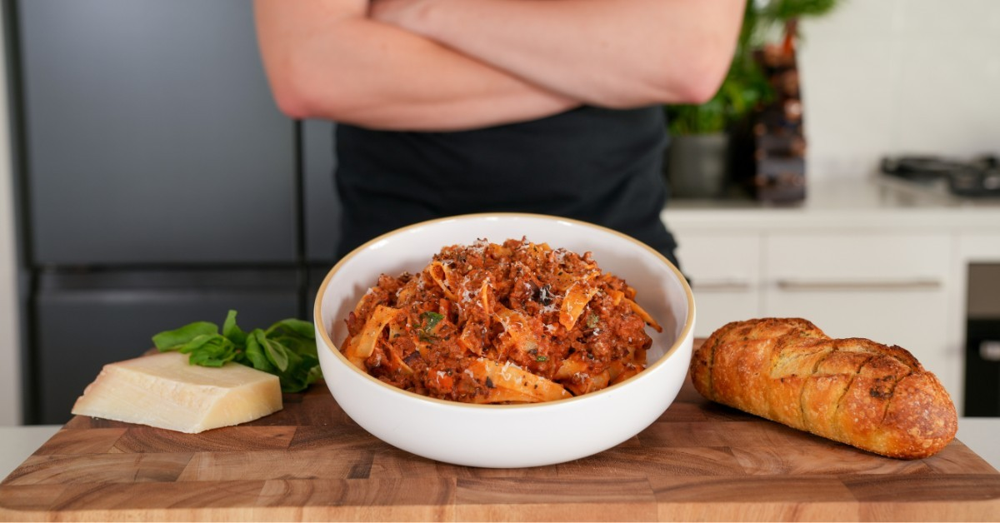

Beef Ragu Recipe

Description
This beef ragu is slow cooked in a red wine reduction, resulting in rich, tender beef.
This is a great recipe to use for meal prep.
Ingredients
- 30ml - Olive Oil
- 1kg - Beef Chuck, Diced
- 1 - Brown Onion, Diced
- 1 - Head of Garlic, Crushed & Chopped
- 3Tbsp - Tomato Paste
- 1/2 Cup - Pinot Noir Red Wine
- 1 - Bouillon Cube, Crushed
- 800g - Crushed Tomatoes
- 1 Cup - Beef Stock
- 6 - Fresh Thyme Sprigs
- 3 - Dried Bay Leaves
- Splash of Worcestershire Sauce
- 500g - Wide Pasta, Tagliatelle
- Seasoning to taste
- Parmesan Cheese To Serve
- Fresh Basil To Serve
Steps
- Dice onions, crush and dice garlic, and dice beef into chunks. Keep beef separate to garlic and onion.
- Add beef to a bowl and season with salt and pepper.
- Add the Olive Oil to a high-rimmed pan or pot and pre-heat to Medium-High.
- Add the beef to the pan in batches and cook until brown all over. Set cooked beef aside.
- Add Onion the pan with a pinch of salt and sweat for approximately 4 minutes.
- Add Garlic to the onion and cook for 1 minute.
- Add Tomato Paste to the pan and cook for 2 minutes.
- From here, add in the Red Wine and Crushed Bouillon Cube. Mix well, and reduce for approximately 2 minutes.
- Lastly, add in the Beef Stock, Crushed Tomatoes, Thyme Sprigs, Bay Leaves and Cooked Beef, along with the Beef resting juices.
- Mix well and bring to a light boil.
- Reduce the heat to a low, add a lid to the pan and let simmer for a minimum of 2 hours.
- Once complete, remove the herbs and break up the beef.
- Add in the cooked pasta and mix until evenly combined.
- Serve topped with Parmesan Cheese and Fresh Basil.
Home